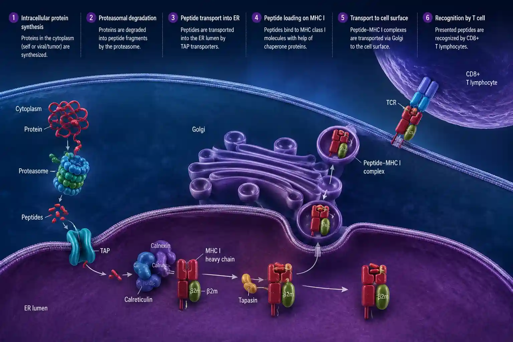

How discovering a strong link between one genetic marker and a form of inflammatory arthritis changed how doctors investigate long-standing back pain.
Sometimes a single inherited marker helps make sense of a puzzling set of symptoms — HLA-B27 is a well-known example.
In 1973, researchers reported that the tissue-type marker HLA-B27 is strongly associated with ankylosing spondylitis — an inflammatory arthritis that mainly affects the spine and pelvis. Most people with the condition carry HLA-B27. Importantly, many healthy people carry it too, so the test supports the overall picture rather than proving the diagnosis on its own.

In someone with suggestive symptoms — long-standing inflammatory back pain starting in early adulthood — an HLA-B27 result adds useful weight to the assessment and helps direct further investigation. It is a good example of how a genetic marker is interpreted alongside the clinical picture and imaging, not in isolation: a positive result raises the likelihood, and a negative one does not rule the condition out.
This lab offers HLA-B27 molecular testing. See the Test List, or contact the lab to discuss sample requirements. Pricing is shared on enquiry.
Brewerton DA et al. and Schlosstein L et al. — independent reports of the strong association between HLA-B27 and ankylosing spondylitis, 1973. · General rheumatology references on the interpretation of HLA-B27 within the clinical picture.
Tell us what you need — our team will help with sample requirements, turnaround, and reporting.